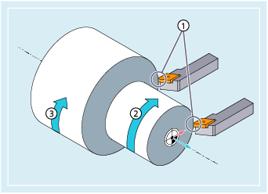

Bei aktiver Funktion "Konstante Schnittgeschwindigkeit" wird abhängig vom jeweiligen Werkstückdurchmesser die Spindeldrehzahl so verändert, dass die Schnittgeschwindigkeit S in m/min bzw. ft/min an der Werkzeugschneide konstant bleibt.
① | Schnittgeschwindigkeit konstant |
② | Spindeldrehzahl erhöht |
③ | Spindeldrehzahl verringert |
Daraus ergeben sich folgende Vorteile:
Gleichmäßige Drehbilder und damit eine hohe Oberflächenqualität
Werkzeugschonende Bearbeitung
| G96/G961/G962 S... | |
| ... | |
| G97/G971/G972/G973 |
| Hinweis |
SCC[<Ax>] kann getrennt oder zusammen mit G96/G961/G962 programmiert werden. |
| Umdrehungsvorschub (wie bei G95) und konstante Schnittgeschwindigkeit Falls G95 vorher noch nicht eingeschaltet war, muss bei Aufruf von G96 ein neuer Vorschubwert F... angegeben werden. | |
| Linearvorschub (wie bei G94) und konstante Schnittgeschwindigkeit | |
| Linearvorschub oder Umdrehungsvorschub und konstante Schnittgeschwindigkeit | |
| Zusammen mit G96, G961 bzw. G962 wird S... nicht als Spindeldrehzahl sondern als Schnittgeschwindigkeit interpretiert. Die Schnittgeschwindigkeit wirkt immer auf die Masterspindel. | |
Einheit: | m/min (bei G71/G710) bzw. ft/min (bei G70/G700) | |
Wertebereich: | 0,1 m/min ... 9999 9999,9 m/min | |
| Umdrehungsvorschub und konstante Spindeldrehzahl (konstante Schnittgeschwindigkeit AUS) | |
| Linearvorschub und konstante Spindeldrehzahl (konstante Schnittgeschwindigkeit AUS) | |
| Linearvorschub oder Umdrehungsvorschub und konstante Spindeldrehzahl (konstante Schnittgeschwindigkeit AUS) | |
| Umdrehungsvorschub ohne Spindeldrehzahlbegrenzung und konstante Spindeldrehzahl (G97 ohne LIMS für ISO-Modus) | |
Hinweis: | ||
| Drehzahlbegrenzung für die Masterspindel (nur wirksam bei aktivem G96/G961/962/G97) Bei Maschinen mit umschaltbaren Masterspindeln können in einem Satz für bis zu 4 Spindeln Begrenzungen mit unterschiedlichen Werten programmiert werden. | |
| Nummer der Spindel | |
| Spindeldrehzahlobergrenze in r/min | |
| Bei aktiver Funktion G96/G961/G962 kann mit SCC[<Ax>] eine beliebige Geometrieachse als Bezugsachse zugeordnet werden. | |
| Hinweis |
Bei Erstanwahl von G96/G961/G962 muss eine konstante Schnittgeschwindigkeit S... eingegeben werden, bei Wiederanwahl von G96/G961/G962 ist die Angabe optional. |
| Hinweis |
Die mit LIMS programmierte Drehzahlbegrenzung darf die mit G26 programmierte oder über Settingdaten festgelegte Grenzdrehzahl nicht überschreiten. |
| Hinweis |
Wird bei einem Wechsel von G96/G961/G962 auf G94/G95 keine neue Spindeldrehzahl S... programmiert, bleibt die zuletzt aktive Spindeldrehzahl wirksam. |
| Hinweis |
Die Bezugsachse für G96/G961/G962 muss zum Programmierzeitpunkt von SCC[<Achse>] eine im Kanal bekannte Geometrieachse sein. Die Programmierung von SCC[<Achse>] ist auch bei aktivem G96/G961/G962 möglich. |
Beispiel 1: Konstante Schnittgeschwindigkeit mit Drehzahlbegrenzung einschalten
| Programmcode | Kommentar |
|---|---|
| N10 SETMS(3) | |
| N20 G96 S100 LIMS=2500 | ; Konstante Schnittgeschwindigkeit = 100 m/min, Max. Drehzahl = 2500 U/min |
| ... | |
| N60 G96 G90 X0 Z10 F8 S100 LIMS=444 | ; Max. Drehzahl = 444 U/min |
Beispiel 2: Drehzahlbegrenzung für 4 Spindeln vorgeben
Die Drehzahlbegrenzungen werden für die Spindel 1 (Masterspindel) und die Spindeln 2, 3 und 4 festgelegt:
| Programmcode | |
|---|---|
| N10 LIMS=300 LIMS[2]=450 LIMS[3]=800 LIMS[4]=1500 | |
| ... | |
Beispiel 3: Zuordnung einer Y-Achse bei einer Planbearbeitung mit X-Achse
| Programmcode | Kommentar |
|---|---|
| N10 G18 LIMS=3000 T1 D1 | ; Drehzahlbegrenzung auf 3000 U/min |
| N20 G0 X100 Z200 | |
| N30 Z100 | |
| N40 G96 S20 M3 | ; Konstante Schnittgeschwindigkeit = 20 m/min, Spindeldrehzahl abhängig von der X-Achse. |
| N50 G0 X80 | |
| N60 G1 F1.2 X34 | ; Planbearbeitung in X mit 1,2 mm/Umdrehung. |
| N70 G0 G94 X100 | |
| N80 Z80 | |
| N100 T2 D1 | |
| N110 G96 S40 SCC[Y] | ; Y-Achse wird G96 zugeordnet und G96 aktiviert (ist in einem Satz möglich). Konstante Schnittgeschwindigkeit = 40 m/min, ist abhängig von der Y-Achse. |
| ... | |
| N140 Y30 | |
| N150 G01 F1.2 Y=27 | ; Einstechen in Y, Vorschub F = 1,2 mm/Umdrehungen. |
| N160 G97 | ; Konstante Schnittgeschwindigkeit aus. |
| N170 G0 Y100 |
| Programmcode | Kommentar |
|---|---|
| ... | |
| N30 LIMS=2000 | ; Drehzahlbegrenzung (2000 r/min) |
| N40 G96 S200 M3 | ; Anwahl konstante Schnittgeschwindigkeit (200 m/min) |
| N50 G90 T1 D1 M8 | |
| N60 G0 G42 X200 Z1 | |
| N70 G1 X200 Z0 F0.25 | |
| N80 Z-15 | ; Die Spindel dreht bei Durchmesser X200 mit 318 r/min. |
| N90 G95 X150 Z-30 | ; Anwahl Umdrehungsvorschub. Da im G95-Satz keine Spindeldrehzahl programmiert ist, wird die zuletzt aktive Spindeldrehzahl (318 r/min) wirksam. |
| N100 G96 X100 Z-50 | ; Wiederanwahl konstante Schnittgeschwindigkeit (200 m/min). Mit abnehmenden Durchmesser X steigt die Spindeldrehzahl an. |
| N110 X30 Z-70 | ; Ab X31.9 dreht die Spindel mit 2000 r/min und wird durch LIMS auf 2000 r/min begrenzt. |
| N120 G95 X40 Z-90 F0.05 | ; Anwahl Umdrehungsvorschub. Da im G95-Satz keine Spindeldrehzahl programmiert ist, wird die zuletzt aktive Spindeldrehzahl (2000 r/min) wirksam. |
| ... | |
| N160 G95 S1500 X50 Z-100 | ; Anwahl Umdrehungsvorschub. Die im G95-Satz programmierte Spindeldrehzahl (1500 r/min) wird wirksam. |
| ... |
Siehe auch:
Konstante Schnittgeschwindigkeit (G96/G961/G962, G97/G971/G972, G973, LIMS, SCC): Weitere Informationen